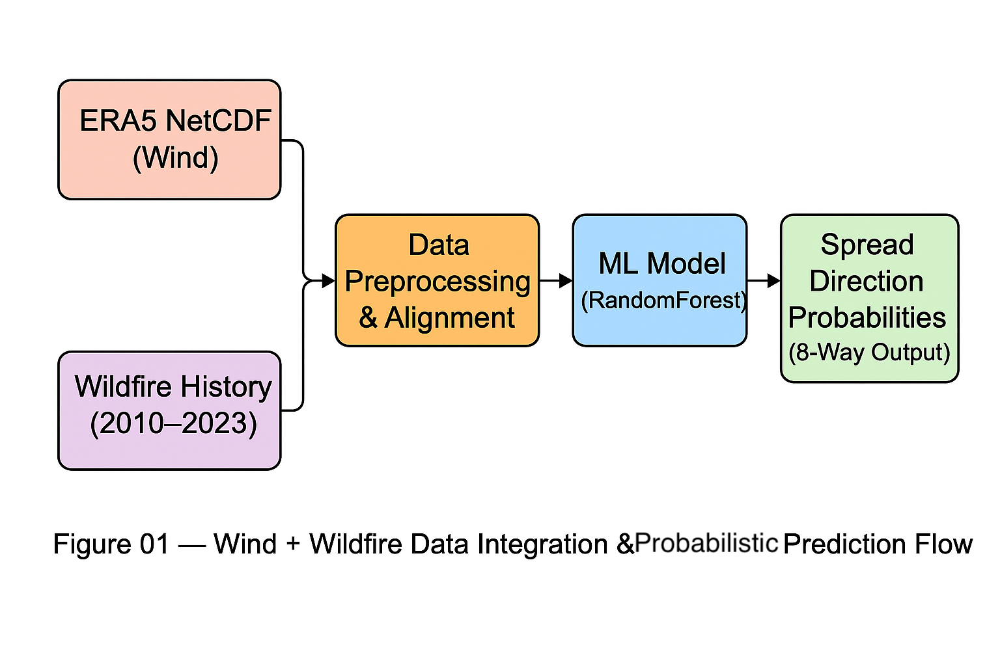
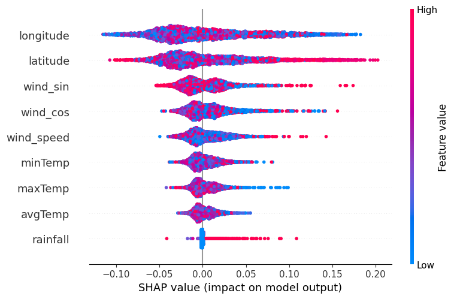

Project
Led the design and implementation of a wildfire spread forecasting system that integrates spatiotemporal wind data, historical fire records, and machine learning predictions. The goal wasn’t just prediction—it was to build a tool that actually works in the field.
Key Design & Execution Strategies
- Problem framing & user-first modeling: Shifted from single-label outputs to 8-direction probability vectors → better fit for multi-directional fire behavior and frontend integration.
- Model choice prioritization: Compared XGBoost, LGBM, etc. → selected RandomForest (best cosine similarity: 0.58 avg) for stability and interpretability.
- Data pipeline planning: Anticipated bottleneck in aligning ERA5 wind and fire incident data → automated time/space matching first to minimize downstream risk.
- Collaboration-ready architecture: Standardized prediction output format (`predicted_spread.json`) → smoother integration with frontend and future teams.
Implementation Highlights
- Data engineering: Extracted and aligned NetCDF-format wind data (u10, v10) to nearest fire points in UTC.
- Model architecture: Multi-output regression + wind direction encoding (sin/cos) → enabled directional spread learning.
- Prediction blending: Combined real-time wind and static model outputs (α = 0.7) → improved robustness.
- UX & Visualization: Leaflet.js heatmap at 250m resolution → interactive map updates via user clicks.
Impact Summary
- User-oriented: Intuitive, map-based UI with dynamic input → accessible to non-technical users in field scenarios.
- Scalable architecture: Separated API, model, and UI layers → ready to expand with terrain, vegetation, alerts.
- Decision support: Translated vague direction guesses into interpretable, data-driven probabilities.
- Model transparency: Integrated SHAP analysis → continuous explainability and trust-building.
Extension to Public Sector / B2G
- GovTech readiness: Fine-tuned granularity and UX design for real-world agency use cases (e.g. forestry/fire units).
- Future collaboration: Planning to integrate with APIs from KMA, KFS → improve model with feedback from field.

Figure 01 — Data Integration Flow

Figure 02 — Flow

Figure 03 — SHAP Summary Plot
Code & Live Demo
📍 Try it out:
HERE
📌 Powered by OpenStreetMap, Nominatim, Open-Meteo API, Leaflet.js